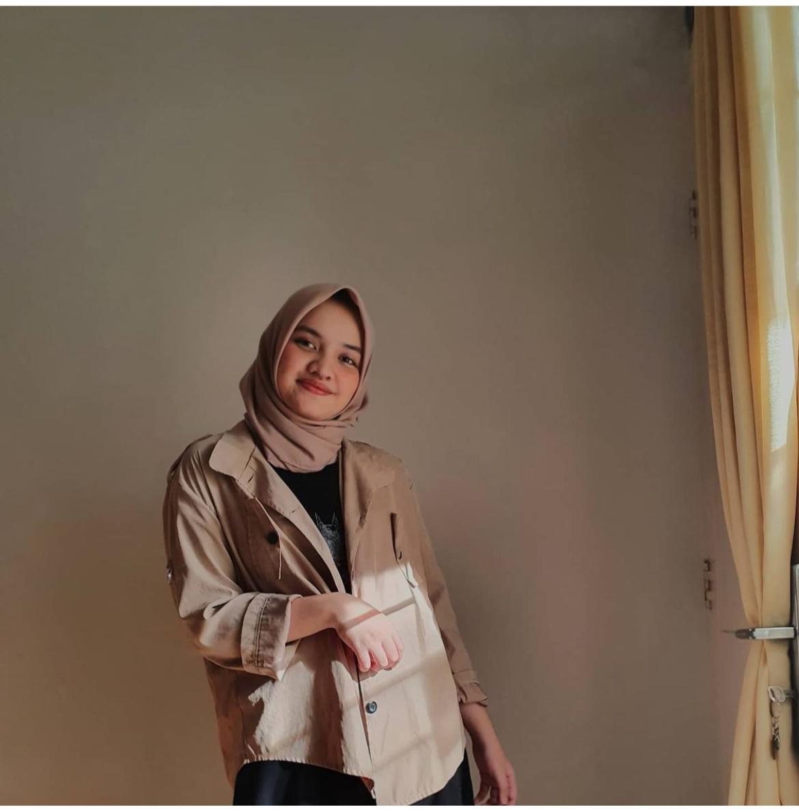

Siti Humaira
Marketing Communication
Jakarta, Indonesia
24 Years old
Siti Humaira yang kerap dipanggil Ima adalah teman dekat saya. Kami telah berteman selama 10 tahun sampai
sekarang. Ima sekarang telah menjadi Head of Marketing Communication di perusahaan Start up di Bandung. Dia
sangat pintar, ramah, pandai bersosialisasi, dan cantik. Saat sekolah dia aktif dalam bidang akademik maupun
non akademik, maka tak heran doa sering meraih juara dalam perlombaan yang diikutinya. Dia mempunyai pribadi
yang percaya diri, cheerful, dan aktif. Dia selalu membuat saya kagum, saya selalu belajar banyak dari dia,
dia selalu memberikan pengaruh yang positif untuk saya. Saya senang dan bersyukur memilki teman sepertinya.
Facts about Siti Humaira
- Mempunyai kembar non indentik bernama Siti Anisa
- Seorang acehnese
- Pernah meraih juara 1 di 10 perlombaan
- Lulusan dari Universitas Padjajaran
- Menguasai 2 bahasa asing yaitu English dan Arab
- Tinggi badan 159cm, berat badan 56kg
More info about Siti Humaira

"Daripada insecure lebih baik kita bersyukur :)"